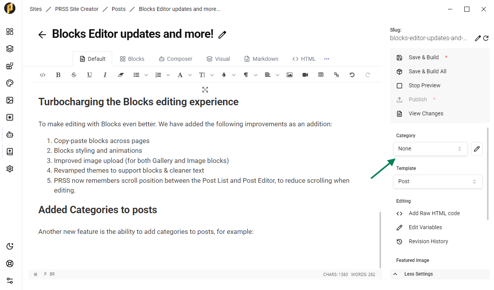

Blocks Editor has undergone significants updates, as announced in our post from the 10th of July. These are very exciting additions that will change how you build with PRSS. There are also many more improvements! Let's go over the highlights.
Blocks Editor 2.0
In the previous Blocks Editor, you could only add fairly simple blocks, such as Paragraphs, Images (through links), Headings, etc. This was not useful enough for richer use-cases, so we set out to revamp the experience.
Now, Blocks Editor has "Featured" blocks. These blocks are highly editable components which are rendered by the new "@prss/ui" library. This means that your configuration for the block is saved in the content, then processed by this library to render the complex components in-place.
As an example, here's the Gallery component rendered in this post:


Here are the Blocks available at the time of writing:
- Hero Banner
- Gallery
- Code Snippet
- Card Block
- Timeline
- Accordion
With more to come!
Turbocharging the Blocks experience
To make editing with Blocks even better. We have added the following improvements:
- Copy-paste blocks across pages
- Blocks styling and animations
- Improved image upload (for both Gallery and Image blocks)
- Revamped themes to support blocks & cleaner text
- PRSS now remembers scroll position between the Post List and Post Editor, to reduce scrolling when editing.
Added Categories to posts
Another new feature is the ability to add categories to posts. This is available in the Post Editor.

This is useful for a "News site" use case, where you'd want to add post categories to the header, such as "News", "World", "Sports", etc. You can now tag individual posts with a Category, then create a page with a "Blog" Template and the Category desired. By doing so, the new page will only show posts that share that category, and make the list browseable through pagination.
Content Delivery Network change: JSDelivr 👉 Unpkg
Last but not least, we have changed the links for theme resources to point to Unpkg. It was brought to our attention that JSDelivr is blocked in China, likely due to licensing reasons. To prevent serving broken pages to some users, we have changed to Unpkg (which uses the reliable CDN Cloudflare under the hood).
As always, enjoy the updates & let us know your feedback through the in-app "About & Help" section.